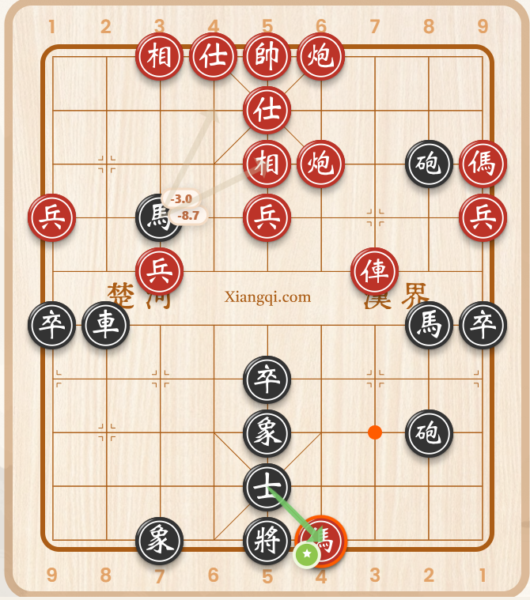

Gợi ý ngay trên bàn cờ
Đọc FEN trực tiếp từ xiangqi.com, phân tích bằng engine và vẽ mũi tên trên bàn cờ.
CCA dùng Pikafish để đọc thế cờ hiện tại, vẽ mũi tên gợi ý, hiển thị đánh giá nước đi và hỗ trợ tự đi. Panel và cài đặt nằm ngay trong giao diện để thao tác nhanh và gọn.

Đọc FEN trực tiếp từ xiangqi.com, phân tích bằng engine và vẽ mũi tên trên bàn cờ.
Khi chưa phát hiện bàn cờ, panel tự thu gọn vào tiêu đề. Có bàn cờ thì tự mở rộng.
Không cần popup riêng. Độ sâu, số dòng gợi ý, màu mũi tên, tự đi và sao lưu đều nằm trong panel.
Nếu trình duyệt chưa có trình quản lý userscript, hãy cài Tampermonkey trước.
Mở liên kết dưới đây và xác nhận cài đặt trong Tampermonkey.
https://raw.githubusercontent.com/nguyenphanvn95/nguyenphanvn95.github.io/main/cca/cca.user.jsĐây là trang giới thiệu và cài đặt. Logic script, engine và tài nguyên được host trên GitHub Pages của bạn.